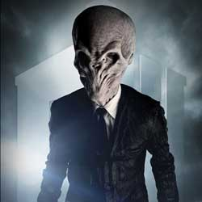

|
| Home The Doctors The Companions The Villains Show History |
The SilenceThe Silence are a fictional "religious order or movement" in the British science fiction television programme Doctor Who, represented by humanoids with alien-like physical characteristics. Executive producer Steven Moffat created the Silence, intending them to be "scarier" than past villains in Doctor Who. Though the phrase "Silence will fall" recurred throughout the 2010 series of Doctor Who, the Silence were not seen until the 2011 series' opener "The Impossible Astronaut". Their origins are eventually revealed in the 2013 special "The Time of the Doctor".
|
|
Ryan Moeller |
Ann Marie Skjold |
Content Derived From: |